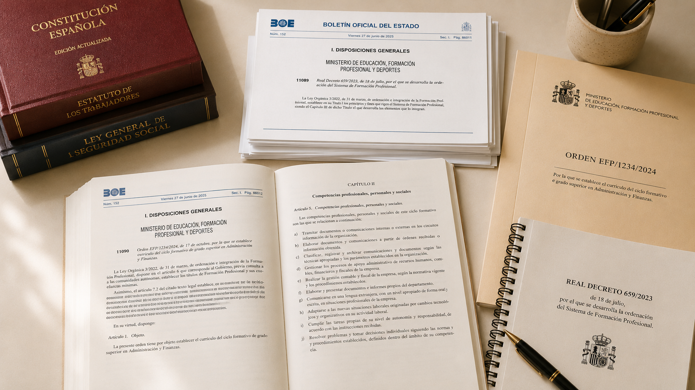
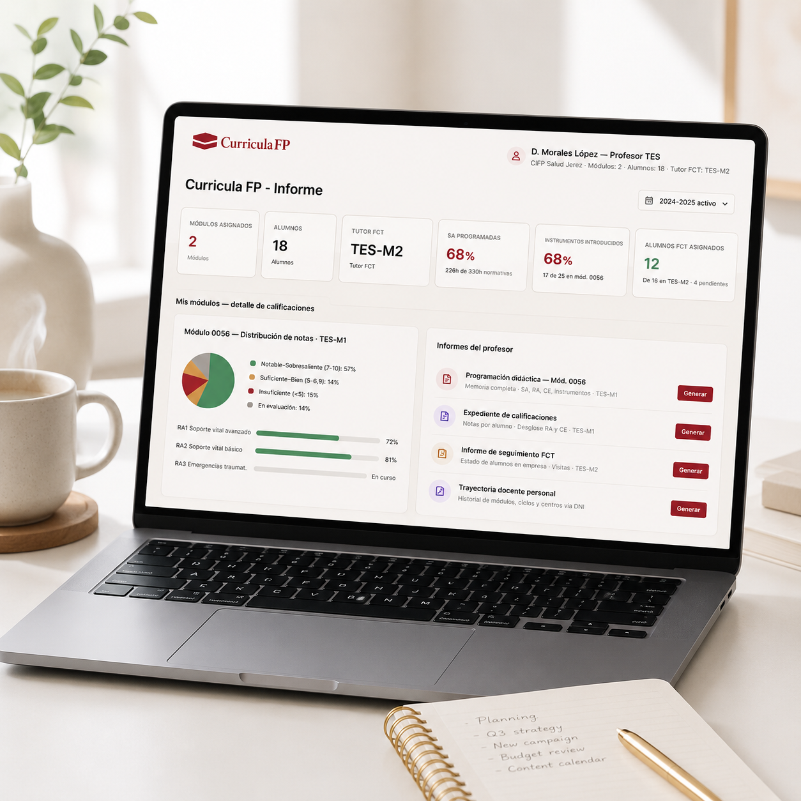
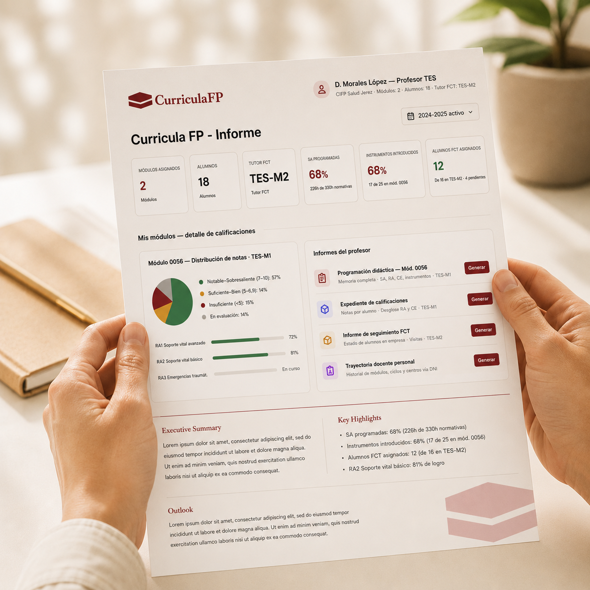

Máster Universitario en Formación del Profesorado · Especialidad FP Sanidad · Universidad Nebrija
CurriculaFP: plataforma web para la gestión curricular de la Formación Profesional
Junio 2026
Justificación del proyecto
Complejidad normativa,
gestión digital insuficiente
LO 3/2022 y RD 659/2023: la reforma más profunda del sistema de Formación Profesional en décadas. Situaciones de aprendizaje, modelo dual, trazabilidad por competencias, acreditación parcial acumulable.
Complejidad técnica real: una programación didáctica completa incluye resultados de aprendizaje, criterios de evaluación con ponderaciones, instrumentos, temporalización y seguimiento trimestral.
Vacío digital específico: Séneca gestiona la dimensión administrativa; Moodle gestiona el aprendizaje. Ninguna herramienta toma la jerarquía curricular normativa de la Formación Profesional como eje de diseño.
Consecuencia práctica: los docentes gestionan la complejidad curricular con Word, hojas de cálculo y documentos sueltos. Trabajo que se rehace en su mayor parte cada curso académico.
Estado de la cuestión y marco teórico
Qué dice la investigación.
Qué exige la normativa.
Transformación digital de la Formación Profesional como prioridad europea (Cedefop, 2020).
Ningún sistema digital específico toma la jerarquía normativa de la Formación Profesional española como eje de su modelo de datos.
Sistemas existentes: gestión administrativa o plataformas de aprendizaje. El espacio curricular estructural queda sin cubrir.
Metodología: Design-Based Research (DBR) — rigor teórico con relevancia práctica.
LO 3/2022: resultado de aprendizaje como unidad curricular operativa. Acreditación parcial acumulable.
RD 659/2023: situación de aprendizaje como unidad metodológica básica. Modelo dual como elemento estructural.
La trazabilidad curricular es una exigencia normativa — debe estar en la arquitectura, no añadirse a posteriori.
Variabilidad autonómica que los sistemas existentes no resuelven de forma general para el conjunto del territorio.

La propuesta
CurriculaFP
Gestión curricular integral, trazable y alineada con la normativa vigente — desde la definición estructural del ciclo hasta la calificación individualizada de cada alumno.
Qué es
Plataforma diseñada desde la jerarquía normativa propia de la Formación Profesional española. Gestiona ciclos, módulos, RA, criterios, SA, formación en empresa y seguimiento del alumnado.
Qué no es
No es un gestor administrativo ni una plataforma de aprendizaje genérica. No replica Séneca ni Moodle. Su función es la estructura curricular normativa.
Alcance
Válida para cualquier ciclo formativo, familia profesional y comunidad autónoma de España, sin adaptaciones por territorio.
Metodología DBR
Análisis → diseño del modelo → prototipo → validación → resultados. Ciclo iterativo con énfasis en relevancia práctica.

Arquitectura del sistema · Modelo de datos
Flujo curricular de CurriculaFP
Pulsa → para revelar
Catálogo nacional
Definición en el centro
Evaluación
Resultado — Prototipo funcional navegable
Demostración
de viabilidad

Evaluación del prototipo
Evaluación con docentes de
Formación Profesional Sanidad
El modelo refleja la lógica de la práctica docente real
Los docentes participantes reconocieron en la estructura de CurriculaFP la lógica de su propio trabajo. El análisis funcional previo capturó adecuadamente la naturaleza del problema.
Funcionalidad más valorada: SA → RA → criterios de evaluación
La cadena situación de aprendizaje → resultado → criterio hace visible la trazabilidad de evidencias del aprendizaje que la normativa exige. La más compleja de diseñar, la más valorada.
Orientación concreta para el desarrollo siguiente
Catálogos predefinidos de instrumentos de evaluación como mejora prioritaria — demanda real no identificada en el análisis previo.
Conclusiones
Lo que el proyecto
demuestra
La separación entre capas de gestión es el eje que ordena la complejidad
Distinguir lo permanente — la estructura curricular del ciclo — de lo anual — grupos, asignaciones y calificaciones — elimina trabajo repetido y formaliza una distinción que la práctica docente maneja implícitamente.
La trazabilidad no se añade: emerge de la arquitectura
Cuando el modelo de datos refleja la jerarquía normativa del sistema, la trazabilidad aparece de forma natural. No es una funcionalidad que se implementa por separado.
Complejidad del modelo no implica complejidad de interfaz
La pantalla más compleja del sistema fue también la más valorada en la evaluación con docentes. Las decisiones de diseño pueden reducir la carga cognitiva sin sacrificar profundidad.
"CurriculaFP nació de un diagnóstico concreto. El trabajo ha permitido verificar que el diagnóstico era correcto y que la respuesta propuesta es viable."

Estado actual del desarrollo
Del prototipo a la
aplicación real
En curso
Fase 1 — Fundamentos de programación
Python iniciado con datos reales de CurriculaFP. Entorno configurado: Python 3.11.9, VS Code.
Siguiente
Fases 2–4 — Backend, API y frontend
PostgreSQL → Django → Django REST Framework → React. Estimación: 4–5 meses a 1–2 horas diarias.
Horizonte
Fase 5 — MVP y primer piloto
Despliegue en Railway o Render. Primer piloto con centro educativo ya identificado.